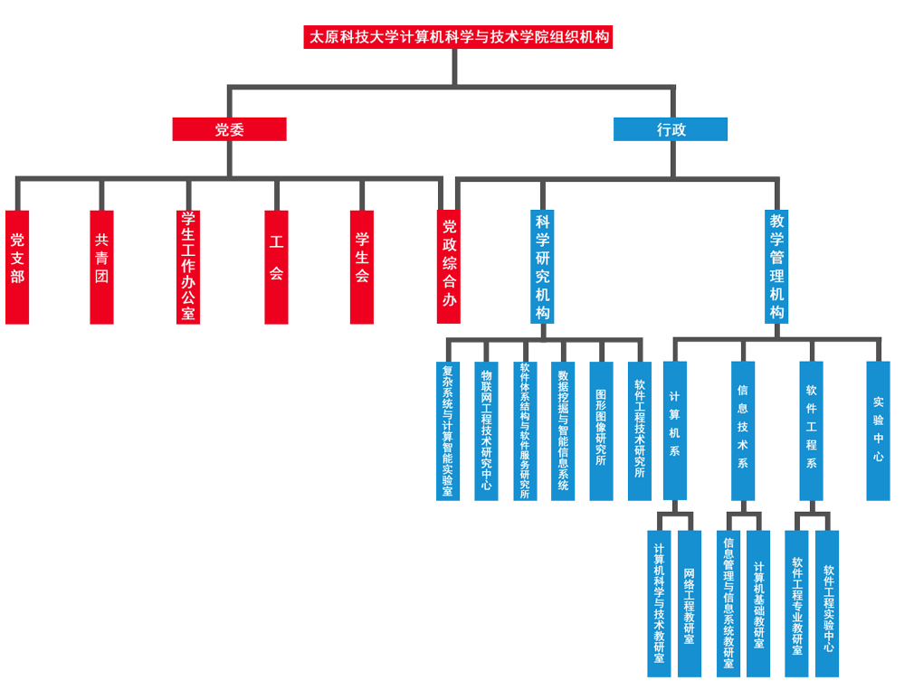

计算机科学与技术学院
School of Computer Science and Technology学院简介
计算机科学与技术学院的前身为太原重机学院计算机科学与工程系，成立于1997年。003年8月正式成立计算机科学与技术学院。目前学院现有教职工68人，其中，拥有教授、副教授等高级职称35人，博士和硕士研究生导师25人。教师中拥有博士学位19人，在读博士8人。学院下设计算机系、信息技术系、软件工程系和一个实验教学中心。拥有计算机科学与技术、信息管理与信息系统、网络工程和软件工程四个本科专业，其中计算机科学与技术专业为国家级特色专业建设点和山西省首届省级品牌专业。信息管理与信息系统专业为山西省品牌专业。
计算机科学与技术学院拥有计算机科学与技术和软件工程两个一级硕士点，计算机技术和软件工程两个工程硕士授权领域。近年来，在智能计算与群智能理论、数据挖掘与知识工程、物联网与传感网技术、软件工程与软件技术、网络化协同与先进制造技术等领域形成了较强的科研特色。承担或完成包括国家自然基金、国家科技攻关项目、山西省基础研究项目等80余项、企业委托项目50余项。发表学术论文800余篇，其中被SCI/EI收录近400篇，获省级科技进步奖和自然科学奖10项，省级教学成果奖2项，出版专著教材30余部。学院是中国系统仿真学会、中国计算机学会的理事单位，山西省自动化工程技术研究中、山西省制造业信息化生产力促进中心的依托单位，是山西省计算机学会挂靠单位。
专业介绍
计算机科学与技术
（理工科，本科，四年制，专业代码080605）
省部级品牌专业，国家级特色专业建设点。本专业着重培养具有良好的科学素养、系统掌握计算机工程技术的基本理论、基本知识和基本技能与方法，突出计算机工程的分析、设计、实现与管理能力的专门高级工程技术人才。本专业开设的主要课程有：计算机科学导论、C高级语言程序设计、算法与数据结构、计算机组成原理、操作系统、计算机网络、计算机系统结构、软件工程、数据库系统原理、电路与系统、模拟与数字电子技术、离散结构、数字逻辑、数字信号处理、嵌入式系统、编译原理、计算方法、面向对象程序设计、软件分析与建模技术等。毕业生适合于在大型企事业单位、IT行业以及科研部门、教育单位、行政管理部门等单位从事计算机工程的开发设计、科学研究、组织管理等工作。本专业具有硕士学位授予权，学生毕业后可继续深造。
信息管理与信息系统
（理工科，本科，四年制，专业代码110102）
省部级品牌专业。本专业是管理科学与工程学科和计算机科学与技术学科的交叉专业。本专业着重培养掌握现代信息管理学基础理论、计算机软件开发与设计方法，具有对大型复杂信息系统进行 分析与设计、集成与配置、管理与维护的应用型专门高级工程技术人才。本专业开设的主要课程有：管理学、经济学、管理统计学、运筹学、管理信息系统、信息资源管理、信息系统分析与设计、电子商务战略结构与设计、算法与数据结构、数据库原理、计算机网络、软件工程、软件分析与建模技术、面向对象程序设计、Web系统与技术等。本专业培养的人才适应于在电子商务、电子政务、企业信息化领域以及科研、教育和管理等部门从事信息管理与信息系统分析、设计、集成、管理与维护等工作。本专业具有硕士学位授予权，学生毕业后可继续深造。
网络工程
（理工科，本科，四年制，专业代码080613W）
本专业是计算机技术、通信技术和工程技术相结合的新型交叉学科。本专业培养具有良好的科学素质和创新精神，系统掌握计算机科学与技术、网络工程和网络安全的相关基本理论、基本知识和基本技能与方法，能够从事计算机网络系统的规划、设计，组织、管理以及计算机网络应用系统的设计、开发、集成及项目管理工作的专门高级工程技术人才。本专业开设的主要课程：算法与数据结构、计算机组织与结构、数据库系统原理、操作系统、计算机网络、软件工程、计算机通信原理、WEB系统与技术、TCP/IP设计与实现、信息保障与网络安全、物联网工程导论、IP交换网原理与技术、宽带通信与高速网络、Cisco路由及交换技术、无线网络与移动计算、密码算法与协议等。本专业具有硕士学位授予权，学生毕业后可继续深造。
软件工程
（理工科，本科，四年制，专业代码080611）
本专业是为了满足国家对软件产业、软件服务以及企业信息化等领域对高级软件技术人才的需求，培养具有扎实的软件工程理论基础和系统的软件开发应用技术，能够从事大型软件的分析、架构、设计、开发、测试和管理的专门高级软件工程技术人才。我校软件工程专业在软件分析与建模技术、嵌入式系统与物联网软件开发、制造业信息化系统软件开发、金融与电子商务系统软件开发与设计、汽车电子类软件开发与设计、工业过程控制系统软件开发与设计、计算机辅助设计（CAD）软件开发与设计、多媒体软件设计与开发等方面具有人才培养特色。本专业开设的主要专业课程：软件构造、软件需求工程、人机交互的软件工程方法学、面向对象方法学、Java高级语言程序设计、软件质量保证与测试、软件项目管理、软件设计与体系结构、软件开发环境与工具、软件分析与建模技术、信息系统分析与设计、软件测试技术、Oracle数据库编程等。本专业毕业的学生可以从事软件技术、软件开发、软件服务、软件维护以及软件管理等领域的技术开发与应用研究工作。本专业具有硕士学位授予权，学生毕业后可继续深造。
现任领导
1970年生，山西万荣人，1992年6月加入中国共产党，1994年毕业于太原重型机械学院（现太原科技大学），2006年被聘为副教授。参加工作以来，先后担任电气工程系辅导员、团委书记；电子信息工程学院副书记副院长；太原科技大学华科学院副书记副院长、书记等职务；现任计算机科学与技术学院党委书记。在工作期间多次获得校级、省级荣誉称号，2009年被山西省高校工委授予“优秀基层党组织书记”荣誉称号。
多年来一直从事语音编码、视频编码方面的研究工作。在国内期刊《电路与系统学报》、《铁道学报》、《太原科技大学学报》，国际会议ICICIC、ISIST等发表论文十余篇；参加山西省青年科学基金一项，国家自然基金一项；获国家发明专利一项，获得山西省科技进步三等奖一项，山西省高校科学技术一等奖，山西省科技厅鉴定一项；指导大学生电子设计大赛，获全国一等奖和山西省一等奖各一项。
计算机学院院长，1961年3月生，山西万荣人。博士、教授，1991年加入中国共产党。
参加工作以来，先后为本科生开设过《人工智能》、《汇编语言程序设计》、《计算机图形学》等课程9门，为研究生开设过《高级软件工程》、《数据仓库与数据挖掘》、《专家系统与知识工程》等课程7门。指导硕士研究生已毕业56人、在读研究生26人。10多次被评为校“教书育人”先进个人和优秀共产党员。先后主编《微型计算机操作基础与应用》、《计算机图形学》、《办公自动化与技术》等著作与教材7部，其中国家级出版社4部，策划与主审国家统编教材《计算机文化基础》等3部。
并在12个省级以上学术团体与组织担任理事、委员等职务。
中国计算机学会 高级会员
中国系统仿真学会 理事
教育部高等学校计算机基础课程教学指导委员会 委员
全国高等学校计算机教育研究会 理事
全国高等学校计算机基础教育研究会 理事
中共山西省委联系 高级专家
省城科技顾问委员会 委员
山西省计算机学会 副理事长.秘书长
山西省软件行业协会 常务理事
山西省电子信息应用专家委员会 委员
山西省城乡发展促进会专家委员会 委员
太原科技大学计算机科学与技术学院教授，博士，历任计算机教研室主任，计算机系副主任、主任，电子信息工程学院副院长，计算机学院副院长等职务。
太原市万柏林区 “优秀政协委员” ，2006年
山西省“优秀教师” ，2007年
太原地区科技拔尖人才，2007年
太原市万柏林区第二、三届政协委员
1964年出生，教授，1984年8月参加工作。目前任太原科技大学计算机科学与技术学院副院长，主管科研、研究生及学科建设工作。
先后发表论文50余篇，被三大索引收录10余篇；主持山西省自然基金、省科技攻关等纵、横向科研项目10余项；先后有2项科研成果分别获得山西省科技进步二等奖和三等奖。2005年被太原科技大学授予校级教学名师称号。
1968年生，山西原平人，中共党员，博士、教授，硕士研究生导师，太原科技大学计算机学院副院长，计算机学院教学指导委员会主任，计算机应用学科学术带头人。1992年毕业于太原重型机械学院自动化专业，获工学学士学位，2011年毕业于太原科技大学机械设计及理论专业网络化协同设计方向，获工学博士学位。曾获山西省优秀教师、山西省青年科技奖、山西省青年教师教学基本功竞赛二等奖、太原科技大学十佳青年教师、太原科技大学建龙奖教金、太原科技大学优秀教师、太原科技大学优秀研究生指导教师等荣誉称号。主要社会兼职：美国ACM学会高级会员、中国计算机学会高级会员、中国系统仿真学会高级会员、中国计算机学会教育专业委员会委员、XILINX国际大学合作计划指导委员会副主任委员、中国信息界学术委员会委员、山西省计算机学会副秘书长等职。
宋仁旺，男，1976年12月生，山西原平人，中共党员，博士，副教授，硕士研究生导师。现任计算机科学与技术学院副书记兼副院长，主管学生工作。多年来一直从事低频隔振、空间遥科学、智能控制方面的研究工作；先后主持或承担了山西省高等学校科技项目、高等院校博士学科点专项科研基金项目、山西省普通本科高等教育教学改革研究项目、总装备部有效载荷专业组“十五”预先研究项目、“十五”卫星有效载荷预研项目、甘肃省国防温度一级计量站项目等多项省部级项目，在国内外发表学术论文20余篇，其中被EI收录6篇，参编21世纪规划类教材一部，荣获2009-2010年度太原科技大学 “十佳青年教师”荣誉称号。
机构设置

{kind=link}
发展历程
计算机科学与技术学院经历了一个漫长而曲折的发展过程，它的前身可追溯到1993年10月。当时由计算站抽出6名教师并入电气工程系组建了计算机教研室，翌年招收了第一批计算机维护与维修专业专科生；1996年开始招收计算机应用专业本科生。1997年将计算机教研室和系统仿真研究所从电气工程系分出成立了计算机科学与工程系。2001年随着院系结构调整，将计算机科学与工程系和自动化系合并，成立了电子信息工程分院。2003年8月将计算机科学与工程系从电子信息工程分院独立，成立了计算机科学与技术分院。2004年5月随着太原重型机械学院更名为太原科技大学，将计算机科学与技术分院改名为计算机科学与技术学院。
多年来，在全体教职工的共同努力下，学院的面貌发生了翻天覆地的变化。学科建设进一步加强，学术水平逐步提高，师资结构日趋合理，科学研究蔚然成风，一个年富力强、充满朝气、团结奋进、蓬勃向上的计算机科学与计算机学院正在太原科技大学崛起。
- 1993年9月，计算机教研室成立
- 1994年9月，计算机科学与技术专科招生。
- 1994年9月，计算机科学与技术本科招生。
- 1997年8月，计算机科学与技术工程系成立。
- 2000 年9月，信息管理与信息系统专业本科招生。
- 2001年与自动化系，电子信息系合并成立电子信息工程分院
- 2001年获计算机应用技术硕士学位授予权
- 2001年获系统工程硕士学位授予权
- 2001年系统工程学科为山西省重点建设学科
- 2003年8月，计算机科学与技术学院成立。
- 2003年 获计算机软件与理论硕士学位授予权
- 2005年计算机科学与技术批准为山西省品牌专业。
- 2006年获模式识别与智能系统硕士学位授予权。
- 2007年9月，网络工程专业本科招生。
- 2007年12月，信息管理与信息系统批准为山西省品牌专业。
- 2010年计算机科学与技术专业批准为国家品牌专业。
- 2011年9月，软件工程专业本科招生。